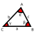

a+b=b+aa + b = b + a a×b=b×aa \times b = b \times a (a+b)+c=a+(b+c)(a + b) + c = a + (b + c) (a×b)×c=a×(b×c)(a \times b) \times c = a \times (b \times c) (a×(b+c)=a×b+a×c(a \times (b + c) = a \times b + a \times c n!=n(n-1)(n-2)…1n! = n (n - 1) (n - 2) … 1 aman=am+na^m a^n = a^{m + n} (ab)m=ambm(a b)^m = a^m b^m (am)n=am×n(a^m)^n = a^{m \times n} a0=1a^0 = 1 aman=am-n\frac{a^m}{a^n} = a^{m - n} a-m=1ama^{-m} = \frac{1}{a^m} x=-b±b2-4ac2ax = \frac{-b \pm \sqrt{b^2 - 4 a c}}{2 a} (a+a)1=a+b(a + a)^1 = a + b (a+b)2=a2+2ab+b2(a + b)^2 = a^2 + 2 a b + b^2 (a+b)3-a3+3a2b+3ab2+b3(a + b)^3 - a^3 + 3 a^2 b + 3 a b^2 + b^3 a2-b2=(a-b)(a+b)a^2 - b^2 = (a - b) (a + b) a3-b3=(a-b)(a2+ab+b2)a^3 - b^3 = (a - b) (a^2 + a b + b^2) 0x=0 if x≠0\frac{0}{x} = 0 \text{ if } x \neq 0 a0=1a^0 = 1 00=10^0 = 1 0x=0 if x≠00^x = 0 \text{ if } x \neq 0 a×0=0a \times 0 = 0 x0 is undefined\frac{x}{0} \text{ is undefined} sin(α)=1csc(α)\sin(\alpha) = \frac{1}{\csc(\alpha)} cos(α)=1sec(α)\cos(\alpha) = \frac{1}{\sec(\alpha)} tan(α)=1cot(α)\tan(\alpha) = \frac{1}{\cot(\alpha)} cotan(α)=1tan(α)\cotan(\alpha) = \frac{1}{\tan(\alpha)} sin2(α)+cos2(α)=1\sin^2(\alpha) + \cos^2(\alpha) = 1 tan2(α)+1=sec2(α)\tan^2(\alpha) + 1 = \sec^2(\alpha) cot2(α)+1=csc2(α)\cot^2(\alpha) + 1 = \csc^2(\alpha) sin(α+β)=sin(α)cos(β)+cos(α)sin(β)\sin(\alpha + \beta) = \sin(\alpha) \cos(\beta) + \cos(\alpha) \sin(\beta) sin(α-β)=sin(α)cos(β)-cos(α)sin(β)\sin(\alpha - \beta) = \sin(\alpha) \cos(\beta) - \cos(\alpha) \sin(\beta) cos(α+β)=cos(α)cos(β)-sin(α)sin(β)\cos(\alpha + \beta) = \cos(\alpha) \cos(\beta) - \sin(\alpha) \sin(\beta) cos(α-β)=cos(α)cos(β)+sin(α)sin(β)\cos(\alpha - \beta) = \cos(\alpha) \cos(\beta) + \sin(\alpha) \sin(\beta) tan(α+β)=tan(α)+tan(β)1-tan(α)tan(β)\tan(\alpha + \beta) = \frac{\tan(\alpha) + \tan(\beta)}{1 - \tan(\alpha) \tan(\beta)} tan(α-β)=tan(α)-tan(β)1+tan(α)tan(β)\tan(\alpha - \beta) = \frac{\tan(\alpha) - \tan(\beta)}{1 + \tan(\alpha) \tan(\beta)} sin(α2)=±1-cos(α)2\sin \left( \frac{\alpha}{2} \right) = \pm \sqrt{\frac{1 - \cos(\alpha)}{2}} cos(α2)=±1+cos(α)2\cos \left( \frac{\alpha}{2} \right) = \pm \sqrt{\frac{1 + \cos(\alpha)}{2}} tan(α2)=1-cos(α)sin(α)=sin(α)1+cos(α)\tan \left( \frac{\alpha}{2} \right) = \frac{1 - \cos(\alpha)}{\sin(\alpha)} = \frac{\sin(\alpha)}{1 + \cos(\alpha)} sin(2α)=2sin(α)cos(α)\sin(2 \alpha) = 2 \sin(\alpha) \cos(\alpha) cos(2α)=cos2(α)-sin2(α)\cos(2 \alpha) = \cos^2(\alpha) - \sin^2(\alpha) cos(2α)=2cos2(α)-1\cos(2 \alpha) = 2 \cos^2(\alpha) - 1 cos(2α)=1-2sin2(α)\cos(2 \alpha) = 1 - 2 \sin^2(\alpha) tan(2α)=2tan(α)1-tan2(α)\tan(2 \alpha) = \frac{2 \tan(\alpha)}{1 - \tan^2(\alpha)}  asin(α)=bsin(α)=csin(γ)\frac{a}{\sin(\alpha)} = \frac{b}{\sin(\alpha)} = \frac{c}{\sin(\gamma)} a2=b2+c2-2bccos(αa^2 = b^2 + c^2 - 2 b c \cos(\alpha b2=a2+c2-2accos(β)b^2 = a^2 + c^2 - 2 a c \cos(\beta) c2=a2+b2-2abcos(γ)c^2 = a^2 + b^2 - 2 a b \cos(\gamma) ddxxn=nxn-1\frac{d}{dx}x^n = n x^{n - 1} ddxc=0\frac{d}{dx}c = 0 ddxx=1\frac{d}{dx}x = 1 ddx1x=-1x2\frac{d}{dx}\frac{1}{x} = - \frac{1}{x^2} ddx1x2=-2x3\frac{d}{dx}\frac{1}{x^2} = - \frac{2}{x^3} ddxx=12x\frac{d}{dx}\sqrt{x} = \frac{1}{2 \sqrt{x}} ddx1x=-12xx\frac{d}{dx}\frac{1}{\sqrt{x}} = - \frac{1}{2 x \sqrt{x}} ddxex=ex\frac{d}{dx}e^x = e^x ddxbx=bxln(b)\frac{d}{dx}b^x = b^x \ln(b) ddxln(x)=1x\frac{d}{dx}\ln(x) = \frac{1}{x} ddxlogb(x)=1xln(b)\frac{d}{dx}\log_b(x) = \frac{1}{x \ln(b)} ddxsinh(x)=cosh(x)\frac{d}{dx}\sinh(x) = \cosh(x) ddxcosh(x)=sinh(x)\frac{d}{dx}\cosh(x) = \sinh(x) ddxtanh(x)=sech2(x)\frac{d}{dx}\tanh(x) = \operatorname{sech}^2(x) ddxarcsinh(x)=11+x2\frac{d}{dx}\operatorname{arcsinh}(x) = \frac{1}{\sqrt{1 + x^2}} ddxarctanh(x)=11-x2\frac{d}{dx}\operatorname{arctanh}(x) = \frac{1}{1 - x^2} ddxsin(x)=cos(x)\frac{d}{dx}\sin(x) = \cos(x) ddxcos(x)=-sin(x)\frac{d}{dx}\cos(x) = -\sin(x) ddxtan(x)=sec2(x)\frac{d}{dx}\tan(x) = \sec^2(x) ddxsec(x)=tan(x)sec(x)\frac{d}{dx}\sec(x) = \tan(x) \sec(x) ddxarcsin(x)=11-x2\frac{d}{dx}\arcsin(x) = \frac{1}{\sqrt{1 - x^2}} ddxarctan(x)=11+x2\frac{d}{dx}\arctan(x) = \frac{1}{1 + x^2} ddxf(x)n=nf(x)n-1f′(x)\frac{d}{dx} f(x)^n = n f(x)^{n - 1} f'(x) ddx1f(x)=-g′(x)g(x)2\frac{d}{dx} \frac{1}{f(x)} = \frac{-g'(x)}{g(x)^2} ddxln|f(x)|=f′(x)f(x)\frac{d}{dx} \ln | f(x) | = \frac{f'(x)}{f(x)} ddxef(x)=f′(x)ef(x)\frac{d}{dx} e^{f(x)} = f'(x) e^{f(x)} ∫xndx=1n+1xn+1+C\int x^n dx = \frac{1}{n + 1} x^{n + 1} + C ∫1xdx=ln|x|+C\int \frac{1}{x} dx = \ln|x| + C ∫cdx=cx+C\int c dx = c x + C ∫xdx=12x2+C\int x dx = \frac{1}{2} x^2 + C ∫x2dx=13x3+C\int x^2 dx = \frac{1}{3} x^3 + C ∫1x2dx=-1x+C\int \frac{1}{x^2} dx = - \frac{1}{x} + C ∫xdx=23xx+C\int \sqrt{x} dx = \frac{2}{3} x \sqrt{x} + C ∫1xdx=2x+C\int \frac{1}{\sqrt{x}} dx = 2 \sqrt{x} + C ∫11+x2dx=arctan(x)+C\int \frac{1}{1 + x^2} dx = \arctan(x) + C ∫11-x2dx=arcsin(x)+C\int \frac{1}{\sqrt{1 - x^2}} dx = \arcsin(x) + C ∫ln(x)dx=xln(x)-x+C\int \ln(x) dx = x \ln(x) - x + C ∫xnln(x)dx=xn+1n+1ln(x)-xn+1(n+1)2+C\int x^n \ln(x) dx = \frac{x^{n + 1}}{n + 1} \ln(x) - \frac{x^{n + 1}}{(n + 1)^2} + C ∫exdx=ex+C\int e^x dx = e^x + C ∫bxdx=1ln(b)bx\int b^x dx = \frac{1}{\ln(b)} b^x ∫sinh(x)dx=cosh(x)+C\int \sinh(x) dx = \cosh(x) + C ∫cosh(x)dx=sinh(x)+C\int \cosh(x) dx = \sinh(x) + C ∫sin(x)dx=-cos(x)+C\int \sin(x) dx = -\cos(x) + C ∫cos(x)dx=sin(x)+C\int \cos(x) dx = \sin(x) + C ∫tan(x)dx=ln(|sec(x)|)+C\int \tan(x) dx = \ln(|\sec(x)|) + C ∫sec(x)dx=ln(|tan(x)+sec(x)|)+C\int \sec(x) dx = \ln(|\tan(x) + \sec(x)|) + C ∫sin2(x)dx=12(x-sin(x)cos(x))+C\int \sin^2(x) dx = \frac{1}{2} \left( x - \sin(x) \cos(x) \right) + C ∫cos2(x)dx=12(x+sin(x)cos(x))+C\int \cos^2(x) dx = \frac{1}{2} \left( x + \sin(x) \cos(x) \right) + C ∫tan2(x)dx=tan(x)-x+C\int \tan^2(x) dx = \tan(x) - x + C ∫sec2(x)dx=tan(x)+C\int \sec^2(x) dx = \tan(x) + C